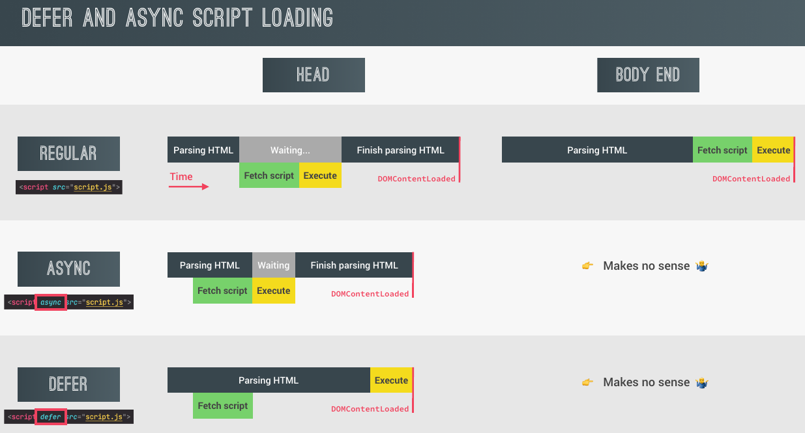
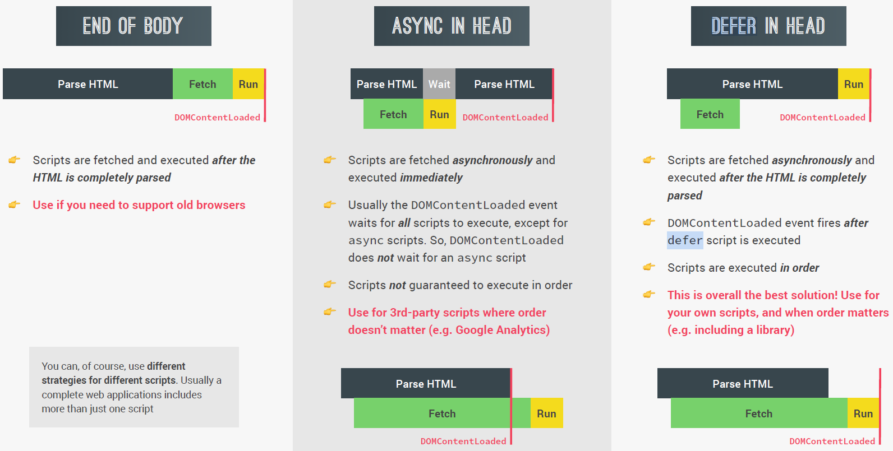
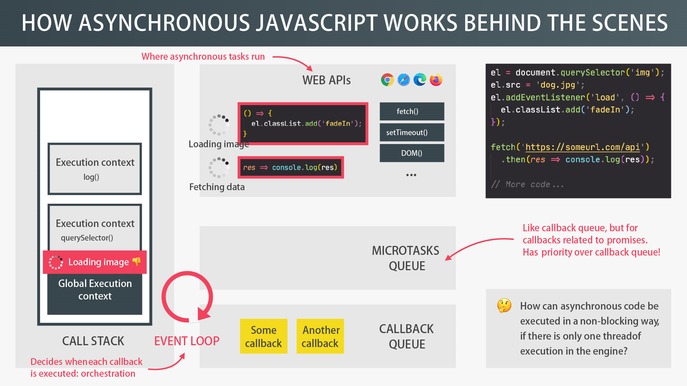

The const keyword in front of an object implies that there is an object, and you're working with references to alter it. It also (correctly) implies that you should not attempt to reassign references to this object.
const obj = {a: 'foo', b: 'bar'};
const obj2 = {z: 'baz'};
obj = obj2; // const will prevent this operation. const obj = {a: 'foo', b: 'bar'};
const obj2 = {z: 'baz'};
obj = obj2; // const will prevent this operation. const does not imply that the object properties should not be altered. It does imply that you should not try to change the reference. If you plan to reassign references to the object, then you use let.
let x = 1; console.log(x++);//1 return the value before operation console.log(x);//2 x = 1; console.log(++x);//2 return the value after operation, equals to the value of (x+1) console.log(x);//2 x=1; console.log(x+1);//2 console.log(x);//1
let x = 1;
console.log(x++);//1 return the value before operation
console.log(x);//2
x = 1;
console.log(++x);//2 return the value after operation, equals to the value of (x+1)
console.log(x);//2
x=1;
console.log(x+1);//2
console.log(x);//1
Number() String()
Number()
String()== loose equal (type coercion)
!=
=== strict equal
!==
Falsy value:
'' or "" 0 undefined null NaN false
'' or ""
0
undefined
null
NaN
falseconst day = 'monday';
switch(day){
case 'monday:
console.log('It is monday');
break;
case 'tuesday':
console.log('It is tuesday');
break;
default:
console.log('');
}const day = 'monday';
switch(day){
case 'monday:
console.log('It is monday');
break;
case 'tuesday':
console.log('It is tuesday');
break;
default:
console.log('');
}const age =23;
age >= 18 ? consol.log('Can drink alcholol') : console.log('Can not drink alcholol');const age =23;
age >= 18 ? consol.log('Can drink alcholol') : console.log('Can not drink alcholol');let age; const drink = age >= 18 ? 'alcholol' : 'non-alcholol'; console.log(drink);
let age;
const drink = age >= 18 ? 'alcholol' : 'non-alcholol';
console.log(drink);
${}
console.log('I drink ${age >= 18 ? 'alcholol' : 'non-alcholol'}')console.log('I drink ${age >= 18 ? 'alcholol' : 'non-alcholol'}')const arr1 = ['a',1,true]; console.log(arr1[0]);
const arr1 = ['a',1,true];
console.log(arr1[0]);const newArrLength = arr.push(element);
const newArrLength = arr.unshift(element);
const lastElement = arr.pop();
const firstElement = arr.shift();
const arr1 = [0,1,2,3];
console.log(arr1.join(''));//output: 0123
console.log(arr1.join(' '));//output: 0 1 2 3
console.log(arr1.join('.'));//output: 0.1.2.3
console.log(arr1.join('\n'));
/*output:
0
1
2
3
*/const arr1 = [0,1,2,3];
console.log(arr1.join(''));//output: 0123
console.log(arr1.join(' '));//output: 0 1 2 3
console.log(arr1.join('.'));//output: 0.1.2.3
console.log(arr1.join('\n'));
/*output:
0
1
2
3
*/const beasts = ['ant', 'bison', 'camel', 'duck', 'bison'];
console.log(beasts.indexOf('bison'));
// Expected output: 1
// Start from index 2
console.log(beasts.indexOf('bison', 2));
// Expected output: 4
console.log(beasts.indexOf('giraffe'));
// Expected output: -1
const beasts = ['ant', 'bison', 'camel', 'duck', 'bison'];
console.log(beasts.indexOf('bison'));
// Expected output: 1
// Start from index 2
console.log(beasts.indexOf('bison', 2));
// Expected output: 4
console.log(beasts.indexOf('giraffe'));
// Expected output: -1
const pets = ['cat', 'dog', 'bat'];
console.log(pets.includes('cat'));
// Expected output: true
console.log(pets.includes('snake'));
// Expected output: falseconst pets = ['cat', 'dog', 'bat'];
console.log(pets.includes('cat'));
// Expected output: true
console.log(pets.includes('snake'));
// Expected output: falseconst obj1 = {arr:['a',1,true],char:'a',num:1,boolean:true};
console.log(obj1.arr);// Dot notation, output: ['a', 1, true]
console.log(obj1['num']);// Bracket Notation, output: 1
const key = 'boolean';
console.log(obj1[key]);//output: true Bracket Notation works with computed property name(a variable for example)
console.log(obj1.key);//output: undefined reason: Dot notation dosen't work with a computed property name, only takes real property name.const obj1 = {arr:['a',1,true],char:'a',num:1,boolean:true};
console.log(obj1.arr);// Dot notation, output: ['a', 1, true]
console.log(obj1['num']);// Bracket Notation, output: 1
const key = 'boolean';
console.log(obj1[key]);//output: true Bracket Notation works with computed property name(a variable for example)
console.log(obj1.key);//output: undefined reason: Dot notation dosen't work with a computed property name, only takes real property name.function calc1(){
return ;
}function calc1(){
return ;
}const calc2 = function (){
return ;
}const calc2 = function (){
return ;
}const calc3 = (param1, paramN) => param1+paramN //expression
const calc3 = (param1, paramN) => param1+paramN //expressionGlobal scope (This keyword point to window)
Function scope
Block scope (Introduced from ES6)
Example: An if statement or a for loop is a scope
var doesn't apply to block scope
{
var str = 'hello';
const str2 = 'hello2';
}
console.log(str); // hello
console.log(str2); //Uncaught ReferenceError: str2 is not defined{
var str = 'hello';
const str2 = 'hello2';
}
console.log(str); // hello
console.log(str2); //Uncaught ReferenceError: str2 is not definedUsed with a method: point to the object that is calling the method
Used with a simple function call: this = undefined
Used with a arrow function: this point to the surrounding of the arrow function(lexical this)
Used with Event listener: this point to DOM element that the handler is attached to
let arr1 = [1,2,3]; const [x,y,z] = arr1; console.log(x,y,z); const[first, ,second] = arr1; console.log(first,second); let arr2 = ['a','b','c']; [arr1,arr2] = [arr2, arr1]; console.log(arr1); console.log(arr2); const nested = [1,2, [3, 4]]; const [a, , [c,d]] = nested; console.log(a,c,d); const [i=1,j=1,k=1] = [7,8]; console.log(i,j,k);
let arr1 = [1,2,3];
const [x,y,z] = arr1;
console.log(x,y,z);
const[first, ,second] = arr1;
console.log(first,second);
let arr2 = ['a','b','c'];
[arr1,arr2] = [arr2, arr1];
console.log(arr1);
console.log(arr2);
const nested = [1,2, [3, 4]];
const [a, , [c,d]] = nested;
console.log(a,c,d);
const [i=1,j=1,k=1] = [7,8];
console.log(i,j,k);const restaurant = {
name:'wendys',
openningHours:'6-24',
categories:'fastFood'
};
const {name,openningHours, categories} = restaurant;
console.log(openningHours);
const {name: restaurantName,openningHours: hours, categories: tags} = restaurant;//assign key to new vraiable name
console.log(restaurantName,hours,tags);//wendys 6-24 fastFood
const {menue1, menue2 = 'burger',name: name2 = 'alternative name', categories:tag} = restaurant;
console.log(menue1,menue2,name2,tag);//undefined burger wendys fastFoodconst restaurant = {
name:'wendys',
openningHours:'6-24',
categories:'fastFood'
};
const {name,openningHours, categories} = restaurant;
console.log(openningHours);
const {name: restaurantName,openningHours: hours, categories: tags} = restaurant;//assign key to new vraiable name
console.log(restaurantName,hours,tags);//wendys 6-24 fastFood
const {menue1, menue2 = 'burger',name: name2 = 'alternative name', categories:tag} = restaurant;
console.log(menue1,menue2,name2,tag);//undefined burger wendys fastFood//Mutating variables
let a = 111;
let b = 999;
const obj = {a:2,b:8,c:14};
({a,b} = obj); // need to wrap {} into parenthesis or it won't work
console.log(a,b);//a=2,b=8//Mutating variables
let a = 111;
let b = 999;
const obj = {a:2,b:8,c:14};
({a,b} = obj); // need to wrap {} into parenthesis or it won't work
console.log(a,b);//a=2,b=8//Nested objects
const hours = {fri:{open:'8', close:'17'},sat:{open:'8', close:'17'}};
const {fri:{open, close}} = hours;
console.log(open,close);//Nested objects
const hours = {fri:{open:'8', close:'17'},sat:{open:'8', close:'17'}};
const {fri:{open, close}} = hours;
console.log(open,close);function orderDelivery({starter = 'soup',main,time,address}){
console.log(`This ${starter} and ${main} will be delivered to ${address} at ${time} o'clock`)
} //soup is the default value of starter
const order1 = {starter:'salad', main:'steak', time:'5', address:'Pitt'};
orderDelivery(order1);
const order2 = {main:'burger', time:'8', address:'ASU'};
orderDelivery(order2);function orderDelivery({starter = 'soup',main,time,address}){
console.log(`This ${starter} and ${main} will be delivered to ${address} at ${time} o'clock`)
} //soup is the default value of starter
const order1 = {starter:'salad', main:'steak', time:'5', address:'Pitt'};
orderDelivery(order1);
const order2 = {main:'burger', time:'8', address:'ASU'};
orderDelivery(order2);const arr = [3,4,5]; const arr1 = [1,2,arr[0],arr[1],arr[2]]; const arr2 = [1,2, ...arr]; console.log(arr2);//[1 2 3 4 5] console.log(...arr1);//1 2 3 4 5
const arr = [3,4,5];
const arr1 = [1,2,arr[0],arr[1],arr[2]];
const arr2 = [1,2, ...arr];
console.log(arr2);//[1 2 3 4 5]
console.log(...arr1);//1 2 3 4 5const str = 'hello';
const letters = [...str,'',...'world'];
console.log(letters);
const workdays = {Mon:1,Tue:2,Wed:3,Thu:4,Fri:5};
const weekdays = {...workdays,Sat:6,Sun:7};
console.log(weekdays.Sat);//output:6const str = 'hello';
const letters = [...str,'',...'world'];
console.log(letters);
const workdays = {Mon:1,Tue:2,Wed:3,Thu:4,Fri:5};
const weekdays = {...workdays,Sat:6,Sun:7};
console.log(weekdays.Sat);//output:6const arr1 = [1,2,3,4,5,6];
const [x,/*y*/,z,...arr2] = [1,2,...arr1]; // the rest pattern has to be at the last position on the left of assignment operation;
console.log(x,z,arr2);//x=1,z=1,arr2 = [2,3,4,5,6]
const weekdays = {Mon:1,Tue:2,Wed:3,Thu:4,Fri:5,Sat:6,Sun:7};
const {Sat,Sun,...workdays} = weekdays;
console.log(workdays);// {Mon: 1, Tue: 2, Wed: 3, Thu: 4, Fri: 5}const arr1 = [1,2,3,4,5,6];
const [x,/*y*/,z,...arr2] = [1,2,...arr1]; // the rest pattern has to be at the last position on the left of assignment operation;
console.log(x,z,arr2);//x=1,z=1,arr2 = [2,3,4,5,6]
const weekdays = {Mon:1,Tue:2,Wed:3,Thu:4,Fri:5,Sat:6,Sun:7};
const {Sat,Sun,...workdays} = weekdays;
console.log(workdays);// {Mon: 1, Tue: 2, Wed: 3, Thu: 4, Fri: 5}function add(...numbers){
console.log(numbers);//numbers = [1, 2, 3]
let sum = 0;
for (let index = 0; index < numbers.length; index++) {
sum += numbers[index];
}
console.log(sum);
}
add(1,2,3);//output 6
const x = [1,2,3];
add(...x);//output 6function add(...numbers){
console.log(numbers);//numbers = [1, 2, 3]
let sum = 0;
for (let index = 0; index < numbers.length; index++) {
sum += numbers[index];
}
console.log(sum);
}
add(1,2,3);//output 6
const x = [1,2,3];
add(...x);//output 6Can use ANY data type, return ANY data type, short-circuiting
OR operation:
short-circuiting: it will immediately return the first truthy value, or the last falsy value when there are no truthy value at all.
console.log(3||'hello');//output:3
console.log(3||'hello');//output:3 console.log(0&&3);//output:0
console.log(0&&3);//output:0let x; const y = 3; console.log(x??y);//output 3 x = 0; console.log(x??y);//output 0, because 0 is not nullish console.log(x||y);//output 3, because 0 is a falsy value
let x;
const y = 3;
console.log(x??y);//output 3
x = 0;
console.log(x??y);//output 0, because 0 is not nullish
console.log(x||y);//output 3, because 0 is a falsy valuelet x = 0; x ||= 10;//x = x||10; console.log(x);//output:10, because 0 is falsy x = 0; x &&= 10;// x = x&&10; console.log(x);//output:0 x ??= 10; console.log(x);//output:0,because x=0 is not nullish
let x = 0;
x ||= 10;//x = x||10;
console.log(x);//output:10, because 0 is falsy
x = 0;
x &&= 10;// x = x&&10;
console.log(x);//output:0
x ??= 10;
console.log(x);//output:0,because x=0 is not nullishconst days = ['mon','tue','wed','thu','fri','sat','sun'];
for (const day of days) {
console.log(day);
}
for (const day of days.entries()) {
console.log(day);
}
/* Array Iterator
Output:
(2) [0, 'mon']
(2) [1, 'tue']
(2) [2, 'wed']
(2) [3, 'thu']
(2) [4, 'fri']
(2) [5, 'sat']
(2) [6, 'sun'] */const days = ['mon','tue','wed','thu','fri','sat','sun'];
for (const day of days) {
console.log(day);
}
for (const day of days.entries()) {
console.log(day);
}
/* Array Iterator
Output:
(2) [0, 'mon']
(2) [1, 'tue']
(2) [2, 'wed']
(2) [3, 'thu']
(2) [4, 'fri']
(2) [5, 'sat']
(2) [6, 'sun'] */const hours ={Mon:{open:'8-17'},Tue:'8-17',Wed:'8-17',Thu:'8-17',Fri:{open:{normal:{holidays:'not open',workdays:'8-20'}}}};
console.log(hours.Mon?.open);//Will return correct value
console.log(hours.Tue.open);//Will return undefined
console.log(hours.Sat?.open);//Will return undefined
console.log(hours.Sat.open);//Error will occur(TypeError: Cannot read property 'open' of undefined) since object 'Sat' is undefined, undefined datatype can't have property.
console.log(hours.Fri.open.normal.workdays);//Will return correct value
console.log(hours.Thu.open?.normal.workdays);//Will return undefined, because there is an object called 'Thu' while 'normal' is undefined.
console.log(hours.Thu.open.normal?.workdays);//Error will occur(TypeError: Cannot read property 'normal' of undefined) since object 'Open' is undefined, undefined datatype can't have property.const hours ={Mon:{open:'8-17'},Tue:'8-17',Wed:'8-17',Thu:'8-17',Fri:{open:{normal:{holidays:'not open',workdays:'8-20'}}}};
console.log(hours.Mon?.open);//Will return correct value
console.log(hours.Tue.open);//Will return undefined
console.log(hours.Sat?.open);//Will return undefined
console.log(hours.Sat.open);//Error will occur(TypeError: Cannot read property 'open' of undefined) since object 'Sat' is undefined, undefined datatype can't have property.
console.log(hours.Fri.open.normal.workdays);//Will return correct value
console.log(hours.Thu.open?.normal.workdays);//Will return undefined, because there is an object called 'Thu' while 'normal' is undefined.
console.log(hours.Thu.open.normal?.workdays);//Error will occur(TypeError: Cannot read property 'normal' of undefined) since object 'Open' is undefined, undefined datatype can't have property.const hours = {Monday:{open:'8',close:'17'},Tuesday:{open:'8',close:'17'},Wednesday:{open:'8',close:'17'},Thursday:{open:'8',close:'20'},Friday:{open:'8',close:'21'}};
for (const day of Object.keys(hours)) {
console.log(day); // Mon Tue Wed Thu Fri
}
const days = Object.keys(hours);
const openHours = Object.values(hours);
console.log(days);//['Mon', 'Tue', 'Wed', 'Thu', 'Fri'] array
console.log(openHours);//array of values
for (const [day,{open,close}] of Object.entries(hours)) {
console.log(`${day} open at ${open}, close at ${close}`); //Monday open at 8, close at 17 Tuesday open at 8, close at 17 ...
}const hours = {Monday:{open:'8',close:'17'},Tuesday:{open:'8',close:'17'},Wednesday:{open:'8',close:'17'},Thursday:{open:'8',close:'20'},Friday:{open:'8',close:'21'}};
for (const day of Object.keys(hours)) {
console.log(day); // Mon Tue Wed Thu Fri
}
const days = Object.keys(hours);
const openHours = Object.values(hours);
console.log(days);//['Mon', 'Tue', 'Wed', 'Thu', 'Fri'] array
console.log(openHours);//array of values
for (const [day,{open,close}] of Object.entries(hours)) {
console.log(`${day} open at ${open}, close at ${close}`); //Monday open at 8, close at 17 Tuesday open at 8, close at 17 ...
}Object.freeze()//Can not add new entry into Object, but still be able to edit the entry
Object.freeze()//Can not add new entry into Object, but still be able to edit the entry.size
.has()
.add()
.delete()
.clear() //delete all the elements in a set
const numbers = [1,2,3,1,2,4,5,6];
const set = new Set(numbers);
console.log(set);// {1, 2, 3, 4, 5, 6}
console.log(new Set('12312').size);//3
//forEach
const set2 = new Set(['USD','GBP','USD','EUR']);
set2.forEach(function(value,_,set){
console.log(`${value}:${_}`);
});
/*
USD:USD
map.js:18
GBP:GBP
map.js:18
EUR:EUR
*/.size
.has()
.add()
.delete()
.clear() //delete all the elements in a set
const numbers = [1,2,3,1,2,4,5,6];
const set = new Set(numbers);
console.log(set);// {1, 2, 3, 4, 5, 6}
console.log(new Set('12312').size);//3
//forEach
const set2 = new Set(['USD','GBP','USD','EUR']);
set2.forEach(function(value,_,set){
console.log(`${value}:${_}`);
});
/*
USD:USD
map.js:18
GBP:GBP
map.js:18
EUR:EUR
*/.size
.set()
.get()
.has()
.delete()
.claer()
const map = new Map();
console.log(map.set(1,'One'));//Map(1) {1 => One}
map.set('Tow',2).set(true,'1+2=3');
console.log(map.get(true));//1+2=3const map = new Map();
console.log(map.set(1,'One'));//Map(1) {1 => One}
map.set('Tow',2).set(true,'1+2=3');
console.log(map.get(true));//1+2=3const map = new Map();
map.keys() //data type:Map Iterator
map.values() //data type:Map Iterator
map.entries() //data type:Map Iterator
//forEach:
const currencies = new Map([['USD','United States Dollar'],['EUR','Euro'],['GBP','Pound']]);
currencies.forEach(function(value,key,map){
console.log(`${key} : 1 ${value}`);
});
/*
USD : 1 United States Dollar
EUR : 1 Euro
GBP : 1 Pound*/const map = new Map();
map.keys() //data type:Map Iterator
map.values() //data type:Map Iterator
map.entries() //data type:Map Iterator
//forEach:
const currencies = new Map([['USD','United States Dollar'],['EUR','Euro'],['GBP','Pound']]);
currencies.forEach(function(value,key,map){
console.log(`${key} : 1 ${value}`);
});
/*
USD : 1 United States Dollar
EUR : 1 Euro
GBP : 1 Pound*/const question = new Map(
[
['question','The best language is? '],
[1,'C'],
[2,'Java'],
[3,'JavaSctipt'],
['correct',3],
[true,'You are correct!'],
[false,'Try again!']
]
);
console.log(question.get('question'));
for (const [key,value] of Object.entries(question)) {
}
const answer = Number(prompt('Your answer'));
question.get('correct') === answer ? console.log(question.get(true)) : console.log(question.get(false));
const arr = [...question] //convert map to arrayconst question = new Map(
[
['question','The best language is? '],
[1,'C'],
[2,'Java'],
[3,'JavaSctipt'],
['correct',3],
[true,'You are correct!'],
[false,'Try again!']
]
);
console.log(question.get('question'));
for (const [key,value] of Object.entries(question)) {
}
const answer = Number(prompt('Your answer'));
question.get('correct') === answer ? console.log(question.get(true)) : console.log(question.get(false));
const arr = [...question] //convert map to arrayconst airline = 'Air France';
console.log(airline.indexOf('i')); // 1
console.log(airline.indexOf('d')); //-1
console.log(airline.indexOf('r')); //2
console.log(airline.lastIndexOf('r')); //5
console.log(airline.length); //10
console.log(airline.slice(4)); //output: France
console.log(airline.slice(4,5)); //output: F
console.log(airline.slice(-6)); //output: France
console.log(airline.slice(0,airline.indexOf(' '))); //output: Air
console.log(airline.charAt(airline.length-1));//e
console.log(airline[airline.length-1]);//e
console.log(airline.at(-1));//e
const airlineLower = airline.toLowerCase();
const airlineCorrect = airline[0].toUpperCase()+airline.slice(1,4)+airline[4].toUpperCase()+airline.slice(5);
console.log(airlineLower);//air france
console.log(airlineCorrect);//Air France
//.trim()
const email = 'rua9@pitt.edu';
const typedEmail = ' RUA9@Pitt.edu \n';
const trimmedLowerEmail = typedEmail.toLowerCase().trim();
console.log(trimmedLowerEmail);//rua9@pitt.edu
const annoucement = 'Hello World, Hello you!';
console.log(annoucement.replace('Hello','Hi'));//output: Hi World, Hello you!
console.log(annoucement.replace(/Hello/g,'Hi'));//output: Hi World, Hi you! Regular Expression replaced all 'Hello'
console.log(annoucement.includes('hello'));//false
console.log(annoucement.includes('Hello'));//true
console.log(annoucement.startsWith('He'));//true
console.log(annoucement.endsWith('ou!'));//true
//split & join
console.log(annoucement.split('o'));//['Hell', ' W', 'rld, Hell', ' y', 'u!']
const [str1,str2] = annoucement.split(',');
console.log(str1,str2);//Hello World Hello you!
const newAnnouncement = ['Hello', str1.toLowerCase(), str2.toLowerCase()].join(' ');//Hello hello world hello you!
console.log(newAnnouncement);
//padding to a particular length
const message = '12345';
console.log(message.padStart(10,'+'));
console.log(message.padEnd(10,'+'));
//repeat
console.log(message.repeat(3));
const airline = 'Air France';
console.log(airline.indexOf('i')); // 1
console.log(airline.indexOf('d')); //-1
console.log(airline.indexOf('r')); //2
console.log(airline.lastIndexOf('r')); //5
console.log(airline.length); //10
console.log(airline.slice(4)); //output: France
console.log(airline.slice(4,5)); //output: F
console.log(airline.slice(-6)); //output: France
console.log(airline.slice(0,airline.indexOf(' '))); //output: Air
console.log(airline.charAt(airline.length-1));//e
console.log(airline[airline.length-1]);//e
console.log(airline.at(-1));//e
const airlineLower = airline.toLowerCase();
const airlineCorrect = airline[0].toUpperCase()+airline.slice(1,4)+airline[4].toUpperCase()+airline.slice(5);
console.log(airlineLower);//air france
console.log(airlineCorrect);//Air France
//.trim()
const email = 'rua9@pitt.edu';
const typedEmail = ' RUA9@Pitt.edu \n';
const trimmedLowerEmail = typedEmail.toLowerCase().trim();
console.log(trimmedLowerEmail);//rua9@pitt.edu
const annoucement = 'Hello World, Hello you!';
console.log(annoucement.replace('Hello','Hi'));//output: Hi World, Hello you!
console.log(annoucement.replace(/Hello/g,'Hi'));//output: Hi World, Hi you! Regular Expression replaced all 'Hello'
console.log(annoucement.includes('hello'));//false
console.log(annoucement.includes('Hello'));//true
console.log(annoucement.startsWith('He'));//true
console.log(annoucement.endsWith('ou!'));//true
//split & join
console.log(annoucement.split('o'));//['Hell', ' W', 'rld, Hell', ' y', 'u!']
const [str1,str2] = annoucement.split(',');
console.log(str1,str2);//Hello World Hello you!
const newAnnouncement = ['Hello', str1.toLowerCase(), str2.toLowerCase()].join(' ');//Hello hello world hello you!
console.log(newAnnouncement);
//padding to a particular length
const message = '12345';
console.log(message.padStart(10,'+'));
console.log(message.padEnd(10,'+'));
//repeat
console.log(message.repeat(3));
const uberOrder = {
restaurant: 'KFC',
food: 'fried chicken',
order(number,addr){
console.log(`${number} * ${this.food} to ${addr}`);
}
};
const makeOrder = uberOrder.order;
//call method:
makeOrder.call(uberOrder,5,'university of pittsburgh');//5 * fried chiecken, The call() method calls the function with a given this value and arguments provided individually.
makeOrder(3);//error, this not defined
//apply method:
makeOrder.apply(uberOrder,[3,'apt305']);//The apply() method calls the specified function with a given "this" value, and arguments provided as an array (or an array-like object)
const uberOrder = {
restaurant: 'KFC',
food: 'fried chicken',
order(number,addr){
console.log(`${number} * ${this.food} to ${addr}`);
}
};
const makeOrder = uberOrder.order;
//call method:
makeOrder.call(uberOrder,5,'university of pittsburgh');//5 * fried chiecken, The call() method calls the function with a given this value and arguments provided individually.
makeOrder(3);//error, this not defined
//apply method:
makeOrder.apply(uberOrder,[3,'apt305']);//The apply() method calls the specified function with a given "this" value, and arguments provided as an array (or an array-like object)
const orderBind = makeOrder.bind(uberOrder);
orderBind(10,'PITT'); //output: 10 * fried chicken to PITT (this keyword has been bound to the uberOrder object)
const orderBind7 = makeOrder.bind(uberOrder,7);
orderBind7('my apartment');//output: 7 * fried chicken to my apartment
//using with DOM
document.querySelector('.buy').addEventListener('click',uberOrder.buyPlane);//output: undefined has bought a new plane for delivery; Reason: 'this' keyword point to the button;
document.querySelector('.buy').addEventListener('click',uberOrder.buyPlane.bind(uberOrder));//output: KFC has bought a new plane for delivery
//partially bind
const tax = (rate,value) => value+rate*value;
console.log(tax(0.1,200));//220
const fixedTax = tax.bind(null,0.2);
console.log(fixedTax(200));//240
//same result using return function
const tax2 = function(rate){
return function(value){
return value+value*rate;
}
};
const fixedTax2 = tax2(0.2);
console.log(fixedTax2(200));//240const orderBind = makeOrder.bind(uberOrder);
orderBind(10,'PITT'); //output: 10 * fried chicken to PITT (this keyword has been bound to the uberOrder object)
const orderBind7 = makeOrder.bind(uberOrder,7);
orderBind7('my apartment');//output: 7 * fried chicken to my apartment
//using with DOM
document.querySelector('.buy').addEventListener('click',uberOrder.buyPlane);//output: undefined has bought a new plane for delivery; Reason: 'this' keyword point to the button;
document.querySelector('.buy').addEventListener('click',uberOrder.buyPlane.bind(uberOrder));//output: KFC has bought a new plane for delivery
//partially bind
const tax = (rate,value) => value+rate*value;
console.log(tax(0.1,200));//220
const fixedTax = tax.bind(null,0.2);
console.log(fixedTax(200));//240
//same result using return function
const tax2 = function(rate){
return function(value){
return value+value*rate;
}
};
const fixedTax2 = tax2(0.2);
console.log(fixedTax2(200));//240(function(){
console.log('only run once');
})();
(()=>console.log('This will only run once as well'))();(function(){
console.log('only run once');
})();
(()=>console.log('This will only run once as well'))();const add = (function () {
let counter = 0;
return function () {counter += 1; return counter}
})();
console.log(typeof(add));//function
add();//1
add();//2
add();//3const add = (function () {
let counter = 0;
return function () {counter += 1; return counter}
})();
console.log(typeof(add));//function
add();//1
add();//2
add();//3//Slice
let arr = ['a','b','c','d','e'];
console.log(arr.slice(2));//['c', 'd', 'e']
console.log(arr);//['a', 'b', 'c', 'd', 'e'] array doesn't change
//Splice
//The splice() method changes the contents of an array by removing or replacing existing elements and/or adding new elements in place.
//To create a new array with a segment removed and/or replaced without mutating the original array, use toSpliced(). To access part of an array without modifying it, see slice().
console.log(arr.splice(2));//['c', 'd', 'e']
console.log(arr);//['a', 'b'] original array has been mutated
//Parameter: splice(startIndex, deleteCount, item0, item1)
//reverse
const arr2 = ['j','i','h','g','f'];
console.log(arr2.reverse());//['f', 'g', 'h', 'i', 'j']
console.log(arr2);//['f', 'g', 'h', 'i', 'j'] original array changed as well
//concat
arr = ['a','b','c','d','e'];
const letters = arr.concat(arr2);
console.log(letters);// ['a', 'b', 'c', 'd', 'e', 'f', 'g', 'h', 'i', 'j']
console.log(arr);// ['a', 'b', 'c', 'd', 'e']
//join
console.log(letters.join('-')); // a-b-c-d-e-f-g-h-i-j
console.log(letters);// ['a', 'b', 'c', 'd', 'e', 'f', 'g', 'h', 'i', 'j']
//at
console.log(arr[arr.length-1]);//e
console.log(arr.at(-1));//e
console.log(arr[-1]);//undefined
//every
const ages = [32, 33, 16, 40];
const ages2 = [32, 33, 20, 40];
const agesOlderThan18 = ages.every((age) => age > 18);
const ages2OlderThan18 = ages2.every((age) => age > 18);
console.log(agesOlderThan18); //false
console.log(ages2OlderThan18); //true
//some
//The some() method tests whether at least one element in the array passes the test implemented by the provided function.
//It returns true if, in the array, it finds an element for which the provided function returns true;
//otherwise it returns false. It doesn't modify the array.
const someArray = [1, 2, 3, 4, 5];
const even = (element) => element % 2 === 0; //Function to check whether an element is even
console.log(someArray.some(even)); //true
//find
//The find() method returns the first element in the provided array that satisfies the provided testing function.
//If no values satisfy the testing function, undefined is returned.
const findArray = [5, 12, 8, 130, 44];
const found = findArray.find((element) => element > 10);
console.log(found); //12
//findIndex
//The findIndex() method returns the index of the first element in an array that satisfies the provided testing function.
//If no elements satisfy the testing function, -1 is returned.
const findIndexArr = [5, 12, 8, 130, 44];
const isLarger = (element) => element > 10;
console.log(findIndexArr.findIndex(isLarger)); //1
//Slice
let arr = ['a','b','c','d','e'];
console.log(arr.slice(2));//['c', 'd', 'e']
console.log(arr);//['a', 'b', 'c', 'd', 'e'] array doesn't change
//Splice
//The splice() method changes the contents of an array by removing or replacing existing elements and/or adding new elements in place.
//To create a new array with a segment removed and/or replaced without mutating the original array, use toSpliced(). To access part of an array without modifying it, see slice().
console.log(arr.splice(2));//['c', 'd', 'e']
console.log(arr);//['a', 'b'] original array has been mutated
//Parameter: splice(startIndex, deleteCount, item0, item1)
//reverse
const arr2 = ['j','i','h','g','f'];
console.log(arr2.reverse());//['f', 'g', 'h', 'i', 'j']
console.log(arr2);//['f', 'g', 'h', 'i', 'j'] original array changed as well
//concat
arr = ['a','b','c','d','e'];
const letters = arr.concat(arr2);
console.log(letters);// ['a', 'b', 'c', 'd', 'e', 'f', 'g', 'h', 'i', 'j']
console.log(arr);// ['a', 'b', 'c', 'd', 'e']
//join
console.log(letters.join('-')); // a-b-c-d-e-f-g-h-i-j
console.log(letters);// ['a', 'b', 'c', 'd', 'e', 'f', 'g', 'h', 'i', 'j']
//at
console.log(arr[arr.length-1]);//e
console.log(arr.at(-1));//e
console.log(arr[-1]);//undefined
//every
const ages = [32, 33, 16, 40];
const ages2 = [32, 33, 20, 40];
const agesOlderThan18 = ages.every((age) => age > 18);
const ages2OlderThan18 = ages2.every((age) => age > 18);
console.log(agesOlderThan18); //false
console.log(ages2OlderThan18); //true
//some
//The some() method tests whether at least one element in the array passes the test implemented by the provided function.
//It returns true if, in the array, it finds an element for which the provided function returns true;
//otherwise it returns false. It doesn't modify the array.
const someArray = [1, 2, 3, 4, 5];
const even = (element) => element % 2 === 0; //Function to check whether an element is even
console.log(someArray.some(even)); //true
//find
//The find() method returns the first element in the provided array that satisfies the provided testing function.
//If no values satisfy the testing function, undefined is returned.
const findArray = [5, 12, 8, 130, 44];
const found = findArray.find((element) => element > 10);
console.log(found); //12
//findIndex
//The findIndex() method returns the index of the first element in an array that satisfies the provided testing function.
//If no elements satisfy the testing function, -1 is returned.
const findIndexArr = [5, 12, 8, 130, 44];
const isLarger = (element) => element > 10;
console.log(findIndexArr.findIndex(isLarger)); //1
const movements = [200,450,-100,300,-400,800,-50,140];
movements.forEach(function(movement){
movement>0? console.log(`You deposit ${movement} bucks`) : console.log(`You withdraw ${Math.abs(movement)} bucks`);
});
movements.forEach(function(movement,index,array){
movement>0? console.log(`Movement${index+1} : You deposit ${movement} bucks`) : console.log(`Movement${index+1} :You withdraw ${Math.abs(movement)} bucks`);
console.log(array);//[200, 450, -100, 300, -400, 800, -50, 140]
});const movements = [200,450,-100,300,-400,800,-50,140];
movements.forEach(function(movement){
movement>0? console.log(`You deposit ${movement} bucks`) : console.log(`You withdraw ${Math.abs(movement)} bucks`);
});
movements.forEach(function(movement,index,array){
movement>0? console.log(`Movement${index+1} : You deposit ${movement} bucks`) : console.log(`Movement${index+1} :You withdraw ${Math.abs(movement)} bucks`);
console.log(array);//[200, 450, -100, 300, -400, 800, -50, 140]
});const eurToUsd = 1.1;
const movementsUsd = movements.map(function(move){
return move*eurToUsd;
});
console.log(movements);//[200, 450, -100, 300, -400, 800, -50, 140] map function doesn't mutate original array;
console.log(movementsUsd);//[220.00000000000003, 495.00000000000006, -110.00000000000001, 330, -440.00000000000006, 880.0000000000001, -55.00000000000001, 154] map function returns a new array;const eurToUsd = 1.1;
const movementsUsd = movements.map(function(move){
return move*eurToUsd;
});
console.log(movements);//[200, 450, -100, 300, -400, 800, -50, 140] map function doesn't mutate original array;
console.log(movementsUsd);//[220.00000000000003, 495.00000000000006, -110.00000000000001, 330, -440.00000000000006, 880.0000000000001, -55.00000000000001, 154] map function returns a new array;const deposits = movements.filter(function(move){
return move>0;
});
console.log(deposits);//[200, 450, 300, 800, 140]
console.log(movements);//[200, 450, -100, 300, -400, 800, -50, 140] filter method doen't mutate the original array.const deposits = movements.filter(function(move){
return move>0;
});
console.log(deposits);//[200, 450, 300, 800, 140]
console.log(movements);//[200, 450, -100, 300, -400, 800, -50, 140] filter method doen't mutate the original array.const myArray = [1, 2, 3, 4]; const callbackfn = (sum, element) => (sum += element); let initialValue = 1; console.log(myArray.reduce(callbackfn)); //10 console.log(myArray.reduce(callbackfn, initialValue)); //11 const myString = ["hello", " world", " !"]; const callbackfn2 = (str, subStr) => (str += subStr); console.log(myString.reduce(callbackfn2)); //hello world ! //The reduceRight() method applies a function against an accumulator and each value of the array (from right-to-left) to reduce it to a single value. console.log(myString.reduceRight(callbackfn2)); // ! worldhello const initialValue2 = "Say "; console.log(myString.reduce(callbackfn2, initialValue2)); //Say hello world ! console.log(myString.reduceRight(callbackfn2, initialValue2)); //Say ! worldhello
const myArray = [1, 2, 3, 4];
const callbackfn = (sum, element) => (sum += element);
let initialValue = 1;
console.log(myArray.reduce(callbackfn)); //10
console.log(myArray.reduce(callbackfn, initialValue)); //11
const myString = ["hello", " world", " !"];
const callbackfn2 = (str, subStr) => (str += subStr);
console.log(myString.reduce(callbackfn2)); //hello world !
//The reduceRight() method applies a function against an accumulator and each value of the array (from right-to-left) to reduce it to a single value.
console.log(myString.reduceRight(callbackfn2)); // ! worldhello
const initialValue2 = "Say ";
console.log(myString.reduce(callbackfn2, initialValue2)); //Say hello world !
console.log(myString.reduceRight(callbackfn2, initialValue2)); //Say ! worldhello//Sorting array of Ints //Principle: use a function to compare a and b, if the function returns an INT>0, a will be placed after b. //if it returns a negative INT, a will be placed before b. const arr1 = [3, 7, 1, 9, 6]; const sorted1 = arr1.sort((a, b) => a - b); //Ascending sequence, if a-b returns a positive value(a>b), a will be placed after b and vice versa. console.log(sorted1); //[1, 3, 6, 7, 9] console.log(arr1); //[9, 7, 6, 3, 1] The sort method mutate the original array. const sorted2 = arr1.slice().sort((a, b) => b - a); //Descending sequence, if b-a returns a positive value(b>a), a will be placed after b and vice versa. console.log(sorted2); //[9, 7, 6, 3, 1] console.log(arr1); //[1, 3, 6, 7, 9] // By using .slice() to create a new array,the original array wasn't mutated //Sorting array of objects based on its String property array.sort((element1,element2)=>element1.name.localeCompare(element2.name)) //localeCompare() is a String method wich returns a negative INT if String1<String2
//Sorting array of Ints
//Principle: use a function to compare a and b, if the function returns an INT>0, a will be placed after b.
//if it returns a negative INT, a will be placed before b.
const arr1 = [3, 7, 1, 9, 6];
const sorted1 = arr1.sort((a, b) => a - b); //Ascending sequence, if a-b returns a positive value(a>b), a will be placed after b and vice versa.
console.log(sorted1); //[1, 3, 6, 7, 9]
console.log(arr1); //[9, 7, 6, 3, 1] The sort method mutate the original array.
const sorted2 = arr1.slice().sort((a, b) => b - a); //Descending sequence, if b-a returns a positive value(b>a), a will be placed after b and vice versa.
console.log(sorted2); //[9, 7, 6, 3, 1]
console.log(arr1); //[1, 3, 6, 7, 9] // By using .slice() to create a new array,the original array wasn't mutated
//Sorting array of objects based on its String property
array.sort((element1,element2)=>element1.name.localeCompare(element2.name))
//localeCompare() is a String method wich returns a negative INT if String1<String2| will mutate original array | will create a new array | to get index of an element | to know if array includes | to transform to value |
|---|---|---|---|---|
| Add to original: .push(end of array） .unshift(start of array) | Computed from original array: .map | To get the index of a value: .indexOf(Based on value) .findIndex(Based on test condition) | Based on value of element: .includes | Based on accumulator: .reduce |
| Remove from original: .pop(element at the end, last index) .shift(element at the start, first index) .splice(depends on the index parameters) | Filtered using condition: .filter | Based on test condition: .some .every | ||
| Others: .reverse .sort .fill | Portion of original： .slice | to get an element in array | to just loop array | |
| Adding original array to other: .concat | .find(Based on test condition) | to create a new String: | Based on callback: .foreach(Does not create a new array, just loops over the original) | |
| Flattening the original: .flat .flatMap | .join(Based on separator String) |
<head> <link rel="stylesheet" href="style.css" /> <script async src="async_script.js"></script> <script defer src="defer_script.js"></script> </head>
<head>
<link rel="stylesheet" href="style.css" />
<script async src="async_script.js"></script>
<script defer src="defer_script.js"></script>
</head>
//Find out the closest element to the e.target
parentElement.addEventListener("click", function (e) {
const button = e.target.closest(".btn--inline");
if (!button) return;
const gotoPage = +button.dataset.goto;
handler(gotoPage);
});
//Find out the closest element to the e.target
parentElement.addEventListener("click", function (e) {
const button = e.target.closest(".btn--inline");
if (!button) return;
const gotoPage = +button.dataset.goto;
handler(gotoPage);
});
<button data-goto="1" class="btn--inline">Goto Page</button>
<button data-goto="1" class="btn--inline">Goto Page</button> const button = document.querySelector(".btn--inline");
const gotoPage = +button.dataset.goto;//Convert String to numberconst button = document.querySelector(".btn--inline");
const gotoPage = +button.dataset.goto;//Convert String to number<body>
<div id="div1">
This element is
<h1>Headline</h1>
<em>and this is some emphasized text.</em>
</div>
<script>
const content = document.getElementById("div1");
console.log(content.innerHTML);
//This element is "<h1>Headline</h1> <em>and this is some emphasized text.</em>"
console.log(content.innerText);
/*This element is "Headline and this is some emphasized text."*/
console.log(content.textContent);
/*This element is Headline and this is some emphasized text.*/
</script>
</body><body>
<div id="div1">
This element is
<h1>Headline</h1>
<em>and this is some emphasized text.</em>
</div>
<script>
const content = document.getElementById("div1");
console.log(content.innerHTML);
//This element is "<h1>Headline</h1> <em>and this is some emphasized text.</em>"
console.log(content.innerText);
/*This element is "Headline and this is some emphasized text."*/
console.log(content.textContent);
/*This element is Headline and this is some emphasized text.*/
</script>
</body><span>Hello <span style="display: none;">World</span></span>Objects(instances) are instantiated from a Class, which functions like a blueprint
Line by line vs Runs in the "background"
Blocking the afterwards code execution vs Non blocking
const timeoutID = setTimeout(function(){
console.log("Hello World!")
},5000)//5000 = 5 seconds
clearTimeout(timeoutID); // Remove the timeoutconst timeoutID = setTimeout(function(){
console.log("Hello World!")
},5000)//5000 = 5 seconds
clearTimeout(timeoutID); // Remove the timeoutconst img = document.querySelector('.pic');//Sync
img.src='doc.jpg';//Async (Loading in background)
//The handler itself is Async, waiting for the finish of loading (while addEventListener is Sync)
img.addEventListener('load',function(){
img.classList.add('fadeIn');
});
p.style.width = '300px'; //Sync, execution not blocked by the 2 Async codeconst img = document.querySelector('.pic');//Sync
img.src='doc.jpg';//Async (Loading in background)
//The handler itself is Async, waiting for the finish of loading (while addEventListener is Sync)
img.addEventListener('load',function(){
img.classList.add('fadeIn');
});
p.style.width = '300px'; //Sync, execution not blocked by the 2 Async code const intervalID = setInterval(function(){
console.log("Hello World!")
},500)//Call the function every 0.5 second
clearInterval(intervalID) // Remove the interval const intervalID = setInterval(function(){
console.log("Hello World!")
},500)//Call the function every 0.5 second
clearInterval(intervalID) // Remove the intervalconst dataToSave = "aString" || JSON.stringfy(object)
localStorage.setItem('dataIdentifier',dataToSave)
const data = localStorage.getItem('dataIdentifier')
localStorage.clear('dataIdentifier')const dataToSave = "aString" || JSON.stringfy(object)
localStorage.setItem('dataIdentifier',dataToSave)
const data = localStorage.getItem('dataIdentifier')
localStorage.clear('dataIdentifier')JSON.stringify() JSON.parse()
JSON.stringify()
JSON.parse()fetch(url)
.then((response) => {
if (!response.ok) {
throw new Error("This is the error"); //Will terminate .then() handler and error will be catched by the .catch() method
}
return response.json();
})
.then(function (json) {
const [data] = json;
return data
})
.catch((err) => {
//Catch all the error in the .then() chain, it also returns a promise
//renderError(`Something went wrong - ${err.message}. Try again!`); //If no specified error threw previously, the error essage will be Something went wrong - json is not iterable. Try again!
console.error(err.message); //Log the thrown error.message from previous steps
})
.finally(
//always happen no matter the result of the promise
(countriesContainer.style.opacity = 1)
);fetch(url)
.then((response) => {
if (!response.ok) {
throw new Error("This is the error"); //Will terminate .then() handler and error will be catched by the .catch() method
}
return response.json();
})
.then(function (json) {
const [data] = json;
return data
})
.catch((err) => {
//Catch all the error in the .then() chain, it also returns a promise
//renderError(`Something went wrong - ${err.message}. Try again!`); //If no specified error threw previously, the error essage will be Something went wrong - json is not iterable. Try again!
console.error(err.message); //Log the thrown error.message from previous steps
})
.finally(
//always happen no matter the result of the promise
(countriesContainer.style.opacity = 1)
);try {
let y = 1;
const x = 2;
x = 3;
} catch (error) {
console.log(error.message);
}try {
let y = 1;
const x = 2;
x = 3;
} catch (error) {
console.log(error.message);
}
const p = new Promise((res, rej) => {
res(() => console.log("hello world!"));
});
function basicReturn() {
return Promise.resolve(p);
}
async function asyncReturn() {
return p;
}
console.log(p); // Returns a fulfilled Promise
console.log(basicReturn()); // Returns a fulfilled Promise
console.log(asyncReturn()); // Returns a pending Promise
console.log(p === basicReturn()); // true, since "basicReturn" returns a new promise that is resolved with the same value as p
console.log(p === asyncReturn()); // false, because asyncReturn returns the promise p directly, without creating a new promise
Promise.resolve(p).then((f) => f()); //hello world!
Promise.reject(new Error("Problem!")).catch((err) => console.error(err.message)); //Problem!const p = new Promise((res, rej) => {
res(() => console.log("hello world!"));
});
function basicReturn() {
return Promise.resolve(p);
}
async function asyncReturn() {
return p;
}
console.log(p); // Returns a fulfilled Promise
console.log(basicReturn()); // Returns a fulfilled Promise
console.log(asyncReturn()); // Returns a pending Promise
console.log(p === basicReturn()); // true, since "basicReturn" returns a new promise that is resolved with the same value as p
console.log(p === asyncReturn()); // false, because asyncReturn returns the promise p directly, without creating a new promise
Promise.resolve(p).then((f) => f()); //hello world!
Promise.reject(new Error("Problem!")).catch((err) => console.error(err.message)); //Problem!const promise1 = fetchJSON(countryUrl + `/name/${c1}`);
const promise2 = fetchJSON(countryUrl + `/name/${c2}`);
const promise3 = fetchJSON(countryUrl + `/name/${c3}`);
const promiseArr = await Promise.all([promise1, promise2, promise3]);
//If one promise rejected, all promises get rejectedconst promise1 = fetchJSON(countryUrl + `/name/${c1}`);
const promise2 = fetchJSON(countryUrl + `/name/${c2}`);
const promise3 = fetchJSON(countryUrl + `/name/${c3}`);
const promiseArr = await Promise.all([promise1, promise2, promise3]);
//If one promise rejected, all promises get rejected| ES6 Module | Script | |
|---|---|---|
| Top-level variables | Scoped to module | Global |
| Default mode | Strict mode | "Sloppy" mode |
| Top-level "this" | undefined | window |
| Imports and Exports | Support (Need to happen at top-level, Imports are hoisted) | Not support |
export default function(){}
//or
export default variableexport default function(){}
//or
export default variableimport yourDefineName from './PathToExportModule.js'
import yourDefineName from './PathToExportModule.js'export {variable1,variable2 as yourDefinedName};
export const functionToExport = function(){};export {variable1,variable2 as yourDefinedName};
export const functionToExport = function(){};//Import specific part
import {nameOfTheVariable,nameOfTheFunction as yourDefinedName} from './PathToExportModule.js'
//Import the whole module as an Object
import * as YourDefinedModuleName from './PathToExportModule.js' //Import specific part
import {nameOfTheVariable,nameOfTheFunction as yourDefinedName} from './PathToExportModule.js'
//Import the whole module as an Object
import * as YourDefinedModuleName from './PathToExportModule.js' <script type="module" defer src="script.js"></script>// Only works when the .js file linked as a module
<script type="module" defer src="script.js"></script>// Only works when the .js file linked as a module//NO need to be in an Async function in this case
const res = await fetch('https://jsonplaceholder.typicode.com/posts'); //This will block the afterwards code
const data = await res.json();
console.log(data);//NO need to be in an Async function in this case
const res = await fetch('https://jsonplaceholder.typicode.com/posts'); //This will block the afterwards code
const data = await res.json();
console.log(data);//Export
export.myFunction = function(){}
//Import
const {myFunction} = require('./PathToExportModule.js')//Export
export.myFunction = function(){}
//Import
const {myFunction} = require('./PathToExportModule.js')npm -v #9.6.6 npm init #Initialize package.json npm install lodash-es #Install ES Module based Lodash npm install parcel --save-dev #Install parcel only as development dependency npm start #same to npm run start npm run build #parcel/webpack build npm install #Will install all the package dependencies written in package.json sudo npm uninstall npm -g #Uninstall npm
npm -v #9.6.6
npm init #Initialize package.json
npm install lodash-es #Install ES Module based Lodash
npm install parcel --save-dev #Install parcel only as development dependency
npm start #same to npm run start
npm run build #parcel/webpack build
npm install #Will install all the package dependencies written in package.json
sudo npm uninstall npm -g #Uninstall npmDon't include the node_modules folder when copy or upload(which will be huge)
{
"name": "forkify",
"version": "1.0.0",
"description": "Recipe App",
"main": "index.js",//The main field is a module ID that is the primary entry point to your program. That is, if your package is named foo, and a user installs it, and then does require("foo"), then your main module's exports object will be returned.This should be a module relative to the root of your package folder.For most modules, it makes the most sense to have a main script and often not much else.
//If main is not set, it defaults to index.js in the package's root folder.
"scripts": {
"start": "parcel index.html",
"build": "parcel build index.html --dist-dir ./dist",
"test": "echo \"Error: no test specified\" && exit 1"
},
"author": "Ken",
"license": "ISC",
"devDependencies": {
"@parcel/transformer-sass": "^2.9.3",
"parcel": "^2.9.3",
"process": "^0.11.10"
},
"dependencies": {
"core-js": "^3.31.0",
"fractional": "^1.0.0",
"regenerator-runtime": "^0.13.11"
}
}{
"name": "forkify",
"version": "1.0.0",
"description": "Recipe App",
"main": "index.js",//The main field is a module ID that is the primary entry point to your program. That is, if your package is named foo, and a user installs it, and then does require("foo"), then your main module's exports object will be returned.This should be a module relative to the root of your package folder.For most modules, it makes the most sense to have a main script and often not much else.
//If main is not set, it defaults to index.js in the package's root folder.
"scripts": {
"start": "parcel index.html",
"build": "parcel build index.html --dist-dir ./dist",
"test": "echo \"Error: no test specified\" && exit 1"
},
"author": "Ken",
"license": "ISC",
"devDependencies": {
"@parcel/transformer-sass": "^2.9.3",
"parcel": "^2.9.3",
"process": "^0.11.10"
},
"dependencies": {
"core-js": "^3.31.0",
"fractional": "^1.0.0",
"regenerator-runtime": "^0.13.11"
}
}//deepClone
import cloneDeep from './node_modules/lodash-es/cloneDeep.js';
const state = {
cart: [
{ product: 'bread', quantity: 5 },
{ product: 'pizza', quantity: 3 },
],
user: { loggedIn: true },
};
const stateClone = Object.assign({}, state);
const stateDeepClone = cloneDeep(state);
state.user.loggedIn = false;
console.log(stateClone.user.loggedIn); //Also changed to false
console.log(stateDeepClone.user.loggedIn); //Remained to be true//deepClone
import cloneDeep from './node_modules/lodash-es/cloneDeep.js';
const state = {
cart: [
{ product: 'bread', quantity: 5 },
{ product: 'pizza', quantity: 3 },
],
user: { loggedIn: true },
};
const stateClone = Object.assign({}, state);
const stateDeepClone = cloneDeep(state);
state.user.loggedIn = false;
console.log(stateClone.user.loggedIn); //Also changed to false
console.log(stateDeepClone.user.loggedIn); //Remained to be trueconst today = new Date(); console.log(today); //Mon Jul 17 2023 19:10:58 GMT-0400 (Eastern Daylight Time) const year = today.getFullYear(); const month = today.getMonth(); const date = today.getDate(); const day = today.getDay(); console.log(year, month, date, day); //2023 6 17 1 console.log(today.toDateString()); //Mon Jul 17 2023 let count = 1; const tomorrow = new Date(); tomorrow.setDate(today.getDate() + count); console.log(tomorrow.toDateString()); //Tue Jul 18 2023 count = -1; const yesterday = new Date(); yesterday.setDate(today.getDate() + count); console.log(yesterday.toDateString()); //Sun Jul 16 2023
const today = new Date();
console.log(today); //Mon Jul 17 2023 19:10:58 GMT-0400 (Eastern Daylight Time)
const year = today.getFullYear();
const month = today.getMonth();
const date = today.getDate();
const day = today.getDay();
console.log(year, month, date, day); //2023 6 17 1
console.log(today.toDateString()); //Mon Jul 17 2023
let count = 1;
const tomorrow = new Date();
tomorrow.setDate(today.getDate() + count);
console.log(tomorrow.toDateString()); //Tue Jul 18 2023
count = -1;
const yesterday = new Date();
yesterday.setDate(today.getDate() + count);
console.log(yesterday.toDateString()); //Sun Jul 16 2023Math.floor() Math.round() Math.abs() Math.min(arr) Math.max(arr)
Math.floor()
Math.round()
Math.abs()
Math.min(arr)
Math.max(arr)//The localeCompare() method returns a number indicating whether a reference string comes before, or after, or is the same as the given string in sort order.
// Returns negative INT if a < b in a.localeCompare(b)
console.log("a".localeCompare("c")); //-1
console.log("check".localeCompare("against")); //1
console.log("a".localeCompare("a")); //0
//The localeCompare() method returns a number indicating whether a reference string comes before, or after, or is the same as the given string in sort order.
// Returns negative INT if a < b in a.localeCompare(b)
console.log("a".localeCompare("c")); //-1
console.log("check".localeCompare("against")); //1
console.log("a".localeCompare("a")); //0
Array.from([1, 2, 3], x => x + x)
// Expected output: Array [2, 4, 6]
Array.from({ length: 5 }, (_, i) => (<span>Number{i + 1}</span>))
// Expected output: Array [Number1,Number2,...Number5]Array.from([1, 2, 3], x => x + x)
// Expected output: Array [2, 4, 6]
Array.from({ length: 5 }, (_, i) => (<span>Number{i + 1}</span>))
// Expected output: Array [Number1,Number2,...Number5]